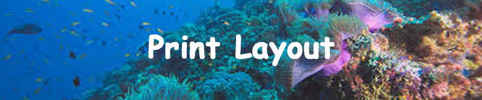

For my InDesign project I still stuck with my ocean theme. I added many of my early designs on the project and I used my favourite colour blue. InDesign helped me learn how to organize my designs better.